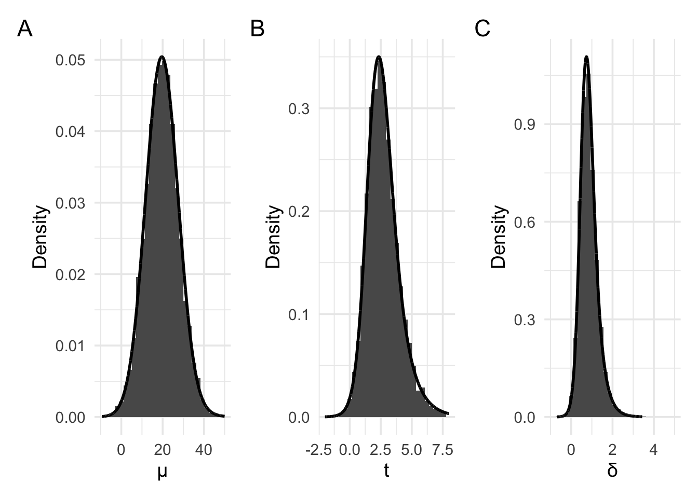
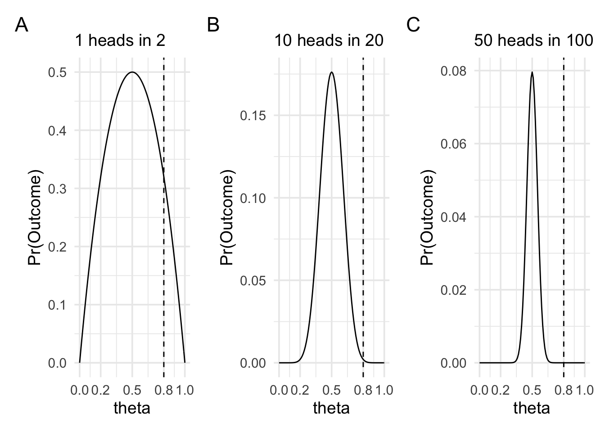
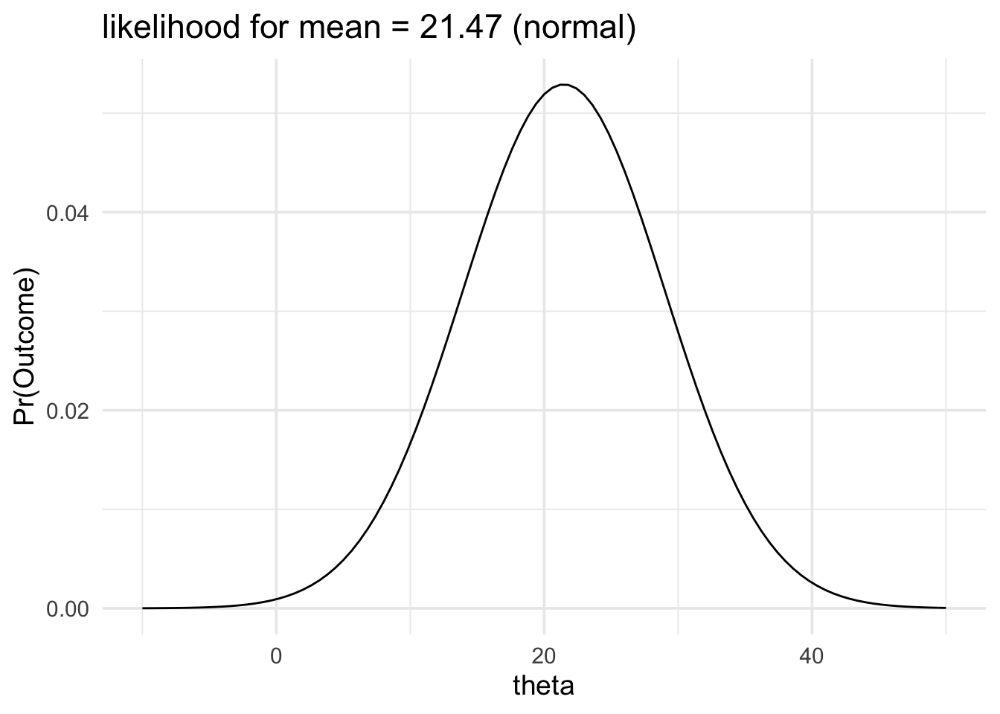
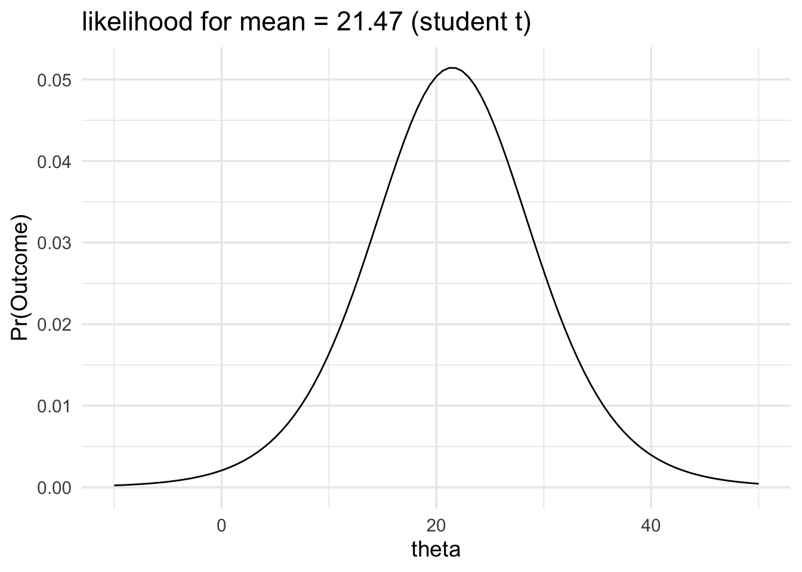
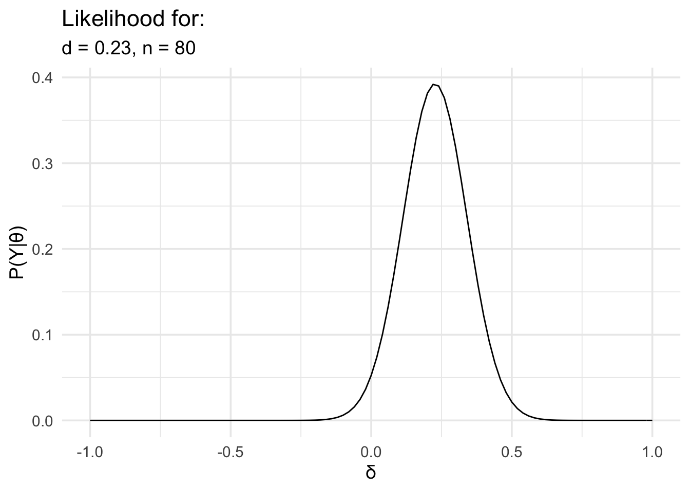
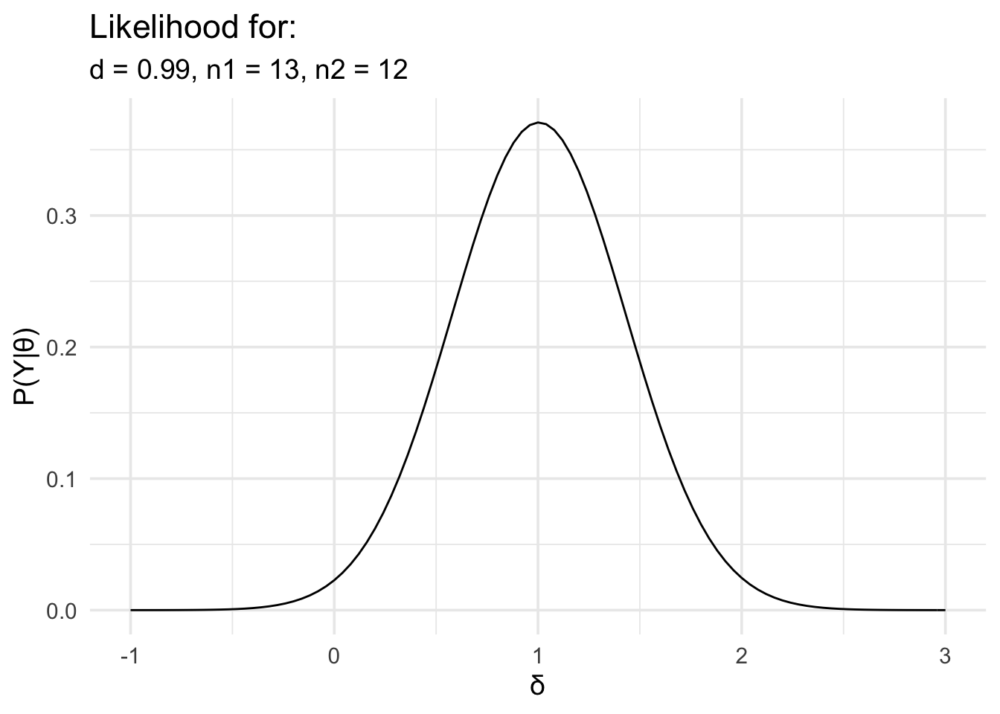
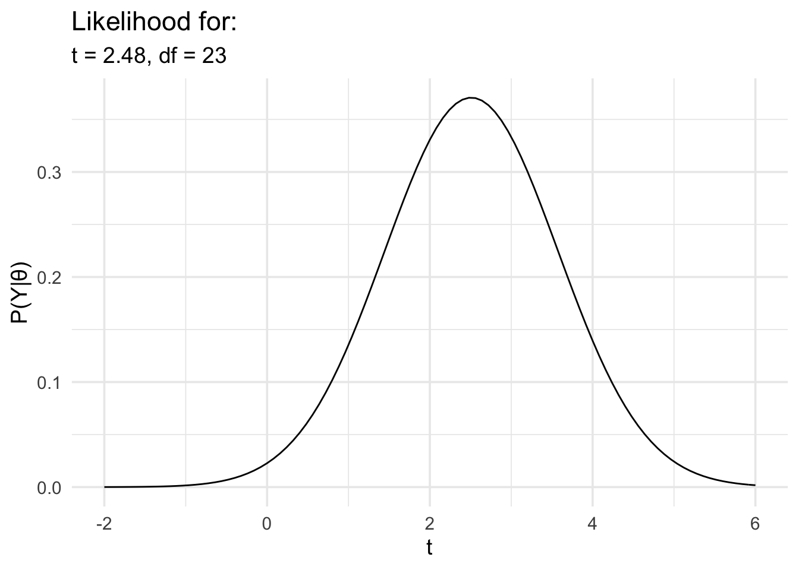

Chapter 5 Moving beyond coin flips

In the previous section (see An alternative to p values, and The Bayes factor), we were introduced to the concept of the likelihood. In these sections, we specifically covered the binomial likelihood, which can be used for working out Bayes factors for samples of Bernoulli trials—that is, trials with two discrete outcomes like heads and tails or successes and failures. We used this specifically for computing our Bayes factors for hypotheses about coin flips. Although these Bayes factors could be used anywhere where we might ordinarily use a frequentist binomial test it is still rather limited in scope. Therefore, in this section, we’ll cover Bayes factors that can be used in other situations. Specifically, we’ll focus primarily on situations where we’re interested in differences between means—that is, situations where we might otherwise use a t-test or ANOVA.
5.1 Choosing a likelihood
In our initial example on hunting treasure (see Null hypothesis significance testing) our treasure hunting device worked by, on average, pointing at 0 when there was no treasure around and, on average, pointing at some other value when there was treasure around.
To work out whether our device was, on average, pointing at a particular value we collected a sample of a fixed size (10 in our first example) and then worked out the average of these values. For example, we might’ve collected a sample of 10 values as follows:
Sample data: -14, -5.8, 39, 1.8, 3.2, 42.9, 11.5, -31.6, -17.2, -11.1
Sample mean: 1.87
After collecting a large number of samples, we could plot our averages as follows:

In the above examples, we’ve set the parameter of interest (the mean) to 0. The above plots are just examples of the sampling distribution when the parameter is 0. Panel A shows the sampling distribution of the raw means. Panel B shows the sampling distribution of the raw means re-scaled to t values. Finally, panel C shows the sampling distribution of the raw means re-scaled to Cohen’s d values (where \(\delta = \frac{\mu}{\sigma}\)). All these plots approximately follow the shape of a normal distribution or a t distribution. We could use these plots to work out p values, just as we previously did.
But, as we did with the coin flip examples, when working with likelihoods, we’re interested in the probability of obtaining our data under different values of the parameter. That is, we must consider the probability of obtaining our current data not just in the case where the parameter of interest is 0, but also where the parameter of interest is some other value. For example, the plots below have been generated by setting the parameter value–that is, the value to which the device, on average points—to a raw mean of approximately 19.6. We’ve also set the average spread of the values—that is, the standard deviation–to 25. Consequently, when rescaled to a t value, this would result in an average t of \(\frac{19.6}{\frac{25}{\sqrt{10}}}\). And when rescaled to a d value, this would result in an average d value of \(\frac{19.6}{25}\).

For these plots, panel A again shows the raw means, with panel B showing the t values, and panel C showing the Cohen’s d values. The distribution in Panel A now approximately follows the shape of a normal distribution or a scaled and shifted t distribution. Panel B and C now follow the shape of slightly differently scaled versions of the non-central t distribution.
In the section that follows, we’ll discover and learn how to use these
likelihoods: The normal likelihood, the scaled and shifted t likelihood,
and three versions of the non-central t likelihood (which bayesplay calls
the non-central t, non-central d, and non-central d2 likelihoods).
5.1.1 The variance of likelihoods
When we were examining coin flips, we saw that the sampling distribution (in the flip until n flips case) followed the binomial distribution. And when we wanted to make inferences about parameter values (the coin bias) we used the binomial likelihood. Our data, which we used to make our inference consisted of, first, the number of heads and, second, the number of flips.
These two values controlled different aspects of the shape of the likelihood function. First, the number of heads that we observed more-or-less controlled where the peak of the likelihood function was located. Second, the number of flips, or the sample size, controlled how spread out the likelihood function was. In the plots below we can see three cases of observing \(\frac{n}{2}\) heads in 2, 20, and 100 flips. In all three plots, the likelihood function is peaked at 0.5 and drops off as we move away from 0.5. The rate of this drop off, however, is steeper as the sample size increases.

What is the important intuition here? To get a handle on the intuition we can think of the extreme cases. When the coin is very biased—for example, it shows heads 0.8 of the time—then it will still sometimes show tails. It might even sometimes show tails on the first flip. In fact, it’ll show tails on the first flip 0.2 of the time. Therefore, we wouldn’t be that surprised if after two flips we have one head and one tail, because it won’t be such an uncommon occurrence. But in the situation where we’re making 100 flips, it now becomes more and more unlikely that we’d see equal numbers of heads and tails if the coin bias really was 0.8. We can put numbers to it by calculating the likelihood ratio between 0.5 and 0.8 for each of the three sample sizes.
When there are 2 trials, the likelihood ratio between θ = 0.5 and θ = 0.8 is 1.56.
When there are 20 trials, the likelihood ratio between θ = 0.5 and θ = 0.8 is 86.74.
When there are 100 trials, the likelihood ratio between θ = 0.5 and θ = 0.8 is 4909093465.3.
For all the likelihoods that we’ll examine in this section, when defining the likelihoods we’ll have one value that represents our observation: the mean we observe, the t value we observe, or the d value we observe. This will be analogous to the number of heads we observe in the coin flip example. And we’ll have a value (or values) that defines how peaked or spread out the likelihood will be: this could be the sample size, the degrees of freedom and/or standard deviation.
In more technical terms, all the likelihoods that we’ll examine will have one parameter that we’re making inferences about: the mean, the t value, or the d value. But this parameter will also have a variance associated with it. And as we’ll see in the examples below, depending on whether we’re interested in raw means,t values, or d values, the sampling distributions are slightly different shapes. Therefore, the likelihoods that we use in each case will be slightly different. We’ll look at each of these in turn.
5.2 Inferences about raw means
When we’re interested in making inferences about the raw means we have two choices available to us. The most straightforward choice is to choose the normal likelihood. The shape of the normal likelihood is controlled by two values. The first value is our observed mean. This value controls the location of the peak of the likelihood function. The second value is the standard deviation of the mean. The standard deviation of the mean is more commonly known as the standard error of the mean. We can work out the standard error using the following formula:
\[\sigma_{\bar{x}} = \frac{\sigma}{\sqrt{n}},\]
where \(\sigma\) is the standard deviation of the population. Usually, we don’t know the value of \(\sigma\), so we estimate it using \(s\), or the standard deviation of our sample.
To see how defining a normal likelihood works in practice, we’ll generate our data. From this, we’ll work out the mean of our sample, and we’ll estimate the standard error (the standard deviation of the mean).
To generate our data, we’ll set up a data generating process (you can think of this as the population) and we’ll draw a sample of 10 values from this. Our data generating process will have a \(\mu\) (mean of the population) of 19.6, and a \(\sigma\) (standard deviation of the population) of 25.
Sample data: 5.59, 13.85, 58.57, 21.36, 22.83, 62.48, 31.12, -12.03, 2.43, 8.46
Mean of sample: 21.47
Standard deviation of sample: 23.84
Size of sample: 10
Standard deviation of sampling distribution (standard error): 7.54
Note that the two values that we want are the mean of the sample and the standard deviation of the mean. A common confusion is that you want the standard deviation of the sample. This is not the value that we want, and we only calculate it because we can use it to estimate the standard deviation of the population and, from this, the standard deviation of the mean.
Now we can define the likelihood, and we can plot it.
data_model <- likelihood(family = "normal", mean = 21.47, sd = 7.54)
plot(data_model) +
labs(title = "likelihood for mean = 21.47 (normal)") +
xlim(-10, 50) +
theme_minimal(14)
From our likelihood plot we can see that our data would be generated more often if the mean of the data generating process was 21 and less often if the mean of the data generating process was 30.
In fact, we can put a number to it and say that:
The data would be produced 1.89 times more often if the mean of the population was 21 than it would be if the mean of the population was 30.
The likelihood function will get wider or narrower when the standard deviation of the mean changes. The two factors that control the standard deviation of the mean are the sample size and the standard deviation of the population. In the example below we’ll keep our estimate of the standard deviation of the population the same but we’ll increase the sample size. Consequently, the standard deviation of the mean will decrease and our likelihood function will become narrower.
data_model <- likelihood(family = "normal", mean = 21.47, sd = 2.384)
plot(data_model) +
labs(title = "likelihood for mean = 21.47") +
xlim(-10, 50) +
theme_minimal(14)
And this would also make a change to any likelihood ratio we could calculate. For example, calculating the new likelihood ratio comparing \(\mu = 30\) and \(\mu = 21\) would give the following result:
The data would be produced 590.92 times more often if the mean of the population was 21 than it would be if the mean of the population was 30.
In the preceding examples, we were modelling our data with a normal likelihood. And we were estimating the standard deviation of the mean using the standard deviation of our sample. We did this, because we didn’t know the actual standard deviation of our data generating process. We’d need to know this value if we wanted to exactly calculate the standard deviation of the mean.
Or at least, we ordinarily don’t know the standard deviation of our data generating process. However, because I set it up, I know it is 25, because this is the value I set it to. Therefore, our estimate was an under estimate. Typically, we’ll underestimate the standard deviation of the population. These under-estimates will be worse when the sample size is small. As our sample size increases then the two values will, by definition, match.
There are a few approaches that we can take to dealing with this issue. First, we can just do nothing. This is the most straightforward approach, and it is also a very common approach. The second approach, is to apply a correction as follows:
\[s_{\bar{x}} = \frac{s}{\sqrt{n}} \times \left(1 + \frac{20}{\mathrm{df}^2}\right),\]
where \(\mathrm{df}\) are the degrees of freedom for the corresponding t test. Dienes (2014, p 11) provides more details on this approach. Dienes (2014) also provides good guidance on using Bayes factors, and I would recommend reading it for the assessment.
Finally, the third approach, is to employ a scaled and shifted t likelihood instead of a normal likelihood. The scaled and shifted t likelihood has fatter tails than the normal likelihood, which accounts for the fact that our normal likelihood tends to be narrower than it ought to be.
In bayesplay we can use the scaled and shifted t likelihood by setting the
likelihood family to **student_t*. When using this likelihood, one
additional value will need to be set. This is the df value, which is the
same as the df value that we would use for the correction approach above.
We’ll recompute our previous example using this likelihood family.
data_model <- likelihood(family = "student_t", mean = 21.47, sd = 7.54, df = 9)
plot(data_model) +
labs(title = "likelihood for mean = 21.47 (student t)") +
xlim(-10, 50) +
theme_minimal(14)
As you can see the two likelihood functions look very similar.
The data would be produced 1.94 times more often if the mean of the population was 21 than it would be if the mean of the population was 30.
This likelihood ratios are also very similar.
The difference in the likelihood ratio between the normal likelihood and the student_t likelihood is about 0.05
5.3 Inferences about effect sizes
A very popular alternative approach to modelling data in terms of the observed mean is to instead model data in terms of standardized effect sizes on the raw means themselves. This gets around the problem of the unknown variance; however, it has an added benefit in that it can place results from very different experiments on a common scale. For example, results from a study of reaction times might have values between 500 and 2000 ms and results from a study on test scores might have values that range between 40 and 90. By re-scaling mean values to standardised means—that is, to effect sizes—we can be more certain that values will fall somewhere between -10 / 10, and more typically between -1/1. When we talk more about priors, we’ll see that this rescaling will help us to come up with priors that will work in a wide range of settings and with a wide range of experiments and types of data. However, we’ll also see that when we want to come up with priors for specific situations, thinking in terms of standardised effects rather than actual differences in data can get confusing.
To define a likelihood based on effect size, we first need to work out the effect size. There are two formulas for effect sizes, depending on whether we have data from one group (or from paired samples) or whether we have data from two groups.
If we have data from paired samples, then we first work out the pair-wise differences. Following this, we proceed as we would for the one-sample case. To work out the effect size for the one sample case, we use the following formula:
\[d = \frac{m}{s},\]
Where \(m\) is the mean of the sample, and \(s\) is the standard deviation of the sample.
If we have data from two groups then the formula is a little more complex. For the two group case, the formula is as follows:
\[d = \frac{m_1 - m2}{s_\mathrm{pooled}},\]
where \(s_\mathrm{pooled}\) is given as follows:
\[s_\mathrm{pooled} = \sqrt{\frac{(n_1 - 1)s^2_1 + (n_2 - 1)s^2_2}{n_1 + n_2 -2}},\]
and where \(m_1\)/\(m_2\), \(s_1\)/\(s_2\), and \(n_1\)/\(n_2\), are the mean, standard
deviation, and sample size for group 1 and group 2. In the worked examples
below we’ll see that we can use the effsize package in R to work out this
effect size.
Once we have the effect size, then the only other value that we need is the sample size. We have one sample size in the one group case (sample size or number of pairs), and for the two group case we’ll have the sample size of each group. We’ll walk through a couple of examples using simulated data.
In the following example, we have data from an experiment looking at memory for words. The words were presented under two conditions: an emotional condition and a neutral condition. We’re interested in knowing whether there is a difference in recognition accuracy between the two conditions. This is the kind of data we’d ordinarily analyse with a t test.
We’ll load the data, work out the effect size, define the likelihood, and then plot it.
# First load the data
word_data <- readr::read_csv("https://files.mindsci.net/word_data.csv",
show_col_types = FALSE
)
# Now we'll work out the effect size and n
summary_data <- word_data %>%
pivot_wider(1:3, names_from = "condition", values_from = "accuracy") %>%
mutate(diff = emotional - neutral) %>%
summarise(m = mean(diff), s = sd(diff), n = n()) %>%
mutate(d = m / s, t = m / (s / sqrt(n)))
# Now define the likelihood and plot it
data_model <- likelihood(
family = "noncentral_d",
d = summary_data$d,
n = summary_data$n
)
plot(data_model) +
labs(
x = "δ", y = "P(Y|θ)",
title = "Likelihood for:",
subtitle = glue::glue("d = {round(summary_data$d,2)}, n = {summary_data$n}")
) +
theme_minimal(14) +
scale_x_continuous(limits = c(-1, 1), breaks = seq(-1, 1, .5))
In the second example, we’ll look at the two group case. For this example we’ll use some simulated data to match some data from an experiment I conducted many years ago. In this task, people were asked to watch an animated avatar performing a movement, they were asked to synchronise a button press with critical points in the movement, and the timing error was measured. The animated avatar moved in two difference ways. In one condition it moved like a human. In the other condition, the dynamics of the movement were altered so that it moved like a robot. All participants viewed both kinds of movements. In addition to this within subjects factor, there was also a between subjects factor. Before viewing any of the movement, participants were split into two groups. One group was given experience actually performing the movement they would later observe, while the other group was not.
This is the kind of data that would ordinarily be analysed using a 2 × 2 mixed ANOVA. However, I was particularly interested in the interaction. The interaction just examines whether the difference between condition 1 and condition 2 is different between group 1 and group 2. In the example below, I’ve already worked out the difference in the timing error for condition 1 and condition 2, and now we just have to compare this difference between the two groups.
As with the earlier example, we’ll load the data, work out the effect size, define the likelihood, and then plot it.
# First load the data
motor_exp <- readr::read_csv("https://files.mindsci.net/motor_exp.csv",
show_col_types = FALSE
)
# Now we'll work out the effect size and n
summary_data <- motor_exp %>%
dplyr::group_by(group) %>%
dplyr::summarise(m = mean(r_diff), s = sd(r_diff), n = n()) %>%
tidyr::pivot_wider(names_from = "group", values_from = c("m", "s", "n"))
md_diff <- summary_data$m_exper - summary_data$m_naive
sd_pooled <- sqrt((((summary_data$n_exper - 1) * summary_data$s_exper^2) +
((summary_data$n_naive - 1) * summary_data$s_naive^2)) /
(summary_data$n_exper + summary_data$n_naive - 2))
d <- md_diff / sd_pooled
# or we can use the effsize package
# you'll just need to install it before you use it
# you can install it with the following command
# install.package("effsize")
#
# and then use it as follows
# d <- effsize::cohen.d(motor_exp$r_diff, motor_exp$group)$estimate
# sample_size <- motor_exp %>%
# dplyr::group_by(group) %>%
# dplyr::summarise(n = n())
# Now define the likelihood and plot it
data_model <- likelihood(
family = "noncentral_d2",
d = d,
n1 = summary_data$n_exper,
n2 = summary_data$n_naive
)
plot(data_model) +
labs(
x = "δ", y = "P(Y|θ)",
title = "Likelihood for:",
subtitle = glue::glue("d = {round(d,2)}, n1 = {summary_data$n_exper}, n2 = {summary_data$n_naive}")
) +
theme_minimal(14) +
scale_x_continuous(limits = c(-1, 3), breaks = seq(-1, 3, 1))
5.4 Inferences about t values
Finally, we’ll repeat the last analysis, but in this case we’ll model the data in terms of t rather than d.
# Load the data again just in case
motor_exp <- readr::read_csv("https://files.mindsci.net/motor_exp.csv",
show_col_types = FALSE
)
# Run the t test and extract the t value and df
t_test_res <- t.test(r_diff ~ group, motor_exp, var.equal = TRUE) %>%
broom::tidy() %>%
dplyr::select(statistic, parameter)
# Now define the likelihood
data_model <- likelihood(
family = "noncentral_t",
t = t_test_res$statistic,
df = t_test_res$parameter
)
# And plot it
plot(data_model) +
labs(
x = "t", y = "P(Y|θ)",
title = "Likelihood for:",
subtitle = glue::glue("t = {round(t_test_res$statistic,2)}, df = {t_test_res$parameter}")
) +
theme_minimal(14) +
scale_x_continuous(limits = c(-2, 6), breaks = seq(-2, 6, 2))
Using the non-central t likelihood might seem a little easier to use, because
it requires less work upfront because we can just use the t.test function to
work out the t statistic instead of having to work out the d value.
However, as we’ll see in the section on priors, there as advantages to using
the non-central t likelihood. This disadvantage is primarily to do with the
fact that the t value can change dramatically with sample size—that is,
very large sample sizes can result in very large t values even if the mean
difference between conditions or groups stays constant. For the non-central d
and non-central d2 likelihoods this isn’t an issue. The d value will stay
the same even if the sample size increases and instead, the likelihood will
just get narrower.
I’ve covered the non-central t likelihood for completeness, but it’s almost never of any real use.